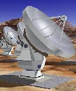

| |
|

|
ALMA
Common Software
|

|
ACS Training
- Socorro 2004
Last ACS 3.5 days Course: 2004 July the 13th –July the
16th
This document contains the Agenda for a 3.5-days
ACS Course in Socorro.
Most of the participants to this course have
interest in C++ development for high level software (Pipeline, Offline,
Archive).
Each item in the agenda links to the
corresponding course material (typically Power Point presentations).
Still a number of presentations contain little or no material, since
the presentations have been given directly on the whiteboard or with a
PC live demonstration, but we want to improve and extend this material
in and for future issues of this course. If you have suggestions or
material that can integrate what available now, you are encouraged to
contribute it.
-
Day 1:
- Day 2:
- ACS Error System
- ACS Properties design patterns
- Day 3:
- Asynchronous communication: Notification Channel and callbacks
- Developing Java GUIs with ABeans
- Day 4:
- Bulk Data transfer
- ACS Logging
Although the Agenda looks quite detailed, the
idea is to be flexible and adapt dynamically the program to the needs
and knowledge of the participants. This means that we expand and
contract the time allocated to the various topics based on the feedback
collected during the course.
We assign plenty of time for exercises, because
we want the participants to get an actual on-hands experience. Again,
if needs arises, exercise time can be traded with discussions and with
extensions to tutorial topics.
Prerequisites:
Compressing an ACS course in just 3.5 days is really a tough job, as
we have seen in previous occasions.
We have therefore decided to skip some introductory and general
presentations that take a relevant amount of time, but that we think
can be replaced by requiring the participants to read in advance some
background documents and ask questions during the first day of the
course.
These are therefore the prerequisites readings for getting the best
out of a 3.5 days ACS course:
Tuesday the 13th : Get your hands on
ACS
| Time |
Program |
Notes |
08:30
08:45 |
Welcome
Course organization and setup.Agenda overview. |
D.Fugate |
08:45
09:15 |
Component
Container and Lifecycle
Management |
H.Sommer
|
|
09:15
09:30
|
Defining the interface for a component:
The Mount1 IDL interface
|
B.Jeram
|
09:30
10:00 |
Build the first component.
Watch Bogdan create a MOUNT1
implementation in C++
|
B.Jeram |
10:00
10:15 |
Coffee break |
|
10:15
10:25 |
Build the first component.
Quick notes on writing Java
components.
|
H.Sommer |
10:25
10:35 |
Build the first component.
Quick notes on writing Python components.
Python Components
|
D.Fugate |
10:35
12:30 |
Group exercises
Build your first component
- Define your own IDL interface
- Pick a language
- Develop an implementation with support from the instructors
|
Exercise time |
12:30
13:30 |
Lunch |
|
|
13:30
14:30
|
Running
ACS:
Starting up and stopping ACS. Running the examples
Using the basic ACS tools: Object Explorer, Logging Client
Demo Setup
ACS Environment Variables |
D.Fugate
|
|
14:30
15:30
|
Group exercises
Play with ACS tools and continue developing and debugging your
Component. |
Exercise time. Includes coffee break |
15:30
15:45 |
ACS
Configuration Database,
Basic Concepts |
B.Jeram |
15:45
16:15 |
Deployment of ACS Components, manager, multiple containers and
CDB configuration, multiple hosts
Deployment Configuration
Database
|
B.Jeram
|
16:15
16:45 |
Exercises:
Deployment and configuration database.
Deploy your own components across multiple machines. |
Exercise time. |
|
16:45
17:00
|
ACS Tutorial:
Developing a Python Client
|
D.Fugate
|
17:00
17:20 |
Exercises:
Develop a Python Client for you own component. |
Exercise time. |
17:20
17:30 |
Day wrap-up: questions and doubts |
|
| 17:30 |
End of day. Exercise/discussion
time for the ones that want to stay |
|
Wednesday the 14th: Error System and Properties
| Time |
Program |
Notes |
|
08:30
08:45
|
What ACS nightmares did you have? Questions
and answers.
|
|
|
08:45
09:15
|
Look again with fresh mind at the
exercices |
Exercise time. |
09:15
09:40 |
ACS
Error System : Concepts
with discussion about C++ filename conventions to track from errors
back to files. |
B. Jeram |
09:40
10:00 |
Exercise: create ACS error
definition and add to your component |
Exercise time. Includes coffee break |
|
10:00
10:15
|
ACS Error System APIs:
C++
|
B.Jeram
|
10:15
10:25 |
ACS Error System APIs:
Quick pass on Java
|
S.Roberts
|
10:25
10:35 |
ACS Error System APIs:
Quick pass on Python
|
D.Fugate
|
10:35
12:30 |
Exercise:
Add error handling to the Components and Clients with the support of
the instructors |
Exercise time. |
12:30
13:30 |
Lunch |
|
13:30
13:50 |
Baci properties: Concepts |
B. Jeram |
13:50
14:10 |
Baci properties: C++
API |
B. Jeram |
14:10
14:30 |
Baci properties: Java API cancelled in
favor of presentation on typesafe handling of XML data |
H.Sommer |
14:30
15:30 |
Exercises:
Extend the interface of your Component with properties and implement it
|
Exercise time. Includes Coffee break |
15:30
16:00 |
Introduction to
ACE.
ACS threads and multi threading and synchronisation with ACE and ACS |
B.Jeram |
16:00
17:00 |
Exercises:
Make your Component multi-threaded. |
Exercise time. Includes Coffee break |
17:00
17:30 |
Day wrap-up: questions and doubts |
|
| 17:30 |
End of day. Exercise/discussion
time for the ones that want to stay |
|
Thursday the 15th:
Asynchronous
communication and ABeans
| Time |
Program |
Notes |
08:45
09:15 |
ACS
Notification Channel: concepts of CORBA Notification Service
|
D.Fugate
|
09:15
09:45 |
ACS NotificationChannel APIs:
C++,Python,
Java
|
D.Fugate
|
09:45
10:30 |
Exercices:
Notification Channel |
Includes coffee break |
10:30
11:00 |
Adding asynchronous behavior: Mount3
IDL interface. Callbacks in ACS |
B.Jeram |
11:00
12:00
|
Exercises with asynchronous behavior |
Includes coffee break |
12:00
13:00 |
Lunch |
|
|
13:00
13:15
|
Introduction
to ABeans and |
B.Jeram
Up to date for ACS 3.0 |
13:15
13:45 |
ABeans
programming
Tutorial |
B.Jeram
Out of date: ACS 2.1 |
13:45
14:15 |
Exercises:
Implementation of the exercise. Error handling. GUI building
|
|
14:15
14:45 |
Filler presentations (see below):
Software Engineering, standards and programming practices or XML or
other topics
|
|
14:45
15:45 |
Putting it all together:
Build a complete example.
|
Includes coffee break |
15:45
17:00 |
Open for topics to be selected. |
|
17:00
17:30
|
Final round table discussion
Course summary, discussions and feedback.
|
Heiko and Bogdan will leave on
Friday, so it is better to collect feedback here. |
| 17:30 |
End of day – exercise/discussion time
|
|
Friday the 16th (1/2 day):
Bulk
Data and Logging System
| Time |
Program |
Notes |
|
08:30
08:45
|
What ACS nightmares did you have? Questions
and answers.
|
|
08:45
09:15 |
Introduction to ACS Bulk Data
transfer |
S.Harrington |
09:15
09:45 |
ACS
Logging System: Tutorial
|
D.Fugate
|
09:45
10:15 |
ACS Logging System APIs:
C++, Java, Python
|
D.Fugate
|
10:15
11:00 |
Exercise:
Add logging and monitoring to the Components and Clients |
Includes coffee break |
11:00
11:30 |
ACS
Time System |
D.Fugate
|
11:30
|
Exercices and discussions
|
|
| |
Real end of course
|
|
Filler presentations
These are presentations we would like to have but that do not fit in
the agenda.
If there will be some time holes to be filled, we will do them.
Unused presentations
The following
topics have not been covered in this course by explicit presentation.
Some of the argument
discussed by these presentations have been discussed on the whiteboard
or during the exercises.
Others have not been touched at all. They have been covered in previous
courses and might be in upcoming courses, depending on the specific
requirements of the course.
We have left
them here for reference, but please be aware that the information might
refer to older versions of ACS and might not be up to date.
Course examples
During the whole course, the presentations will develop one single
example (a telescope Mount).
The code for the example is in the ACS CVS archive under:
ACS/LGPL/CommonSoftware/acscourse.
You can fing here:
-
- The IDL and API documentation for
the module generated by doxygen
Course exercises
During the course we will create groups that will
develop and exend an exercise during the whole duration of the course.
This section now contains the work done for the
previous course and the new exexcices will be put here after the course.
We have therefore 3 exercises available, that are
put here online.
The three groups are expected to cleanup and improve the exercises as a
followup of the course.
Once the cleanup will be completed, the 3 exercises will be archived in
the ACS CVS server for further usage and extension:
-
acsVltTest - This exercise consists of
interfacing ACS with the VLT Common Software. devIO classes to access
the database have been implemented and commands are sent to TIF using a
Java ABeans GUI. A Mount ACS Component receives the commands from the
GUI andconverts and re-routes them to TIF
-
asm - This exercise consists of a
component for an Astronomical Site Monitor
-
isabella - This exercise consists of a
Lamp device and exploits asynchronous communication and error handling
Course setup and computing facilities
(This section now contains the work done for the
previous course and the new exexcices will be put here after the
course).
We have used 4 PCs with Linux RH 9, ACS, Eclipse
and NetBeans installed and we assume that people will work in groups of
3.
Other links: